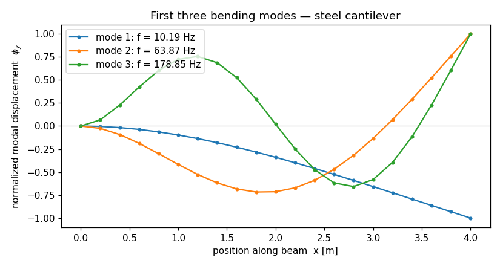

Modal analysis of a cantilever¶
In your first model you pushed a cantilever with a static tip load and read back a deflection. This time the beam carries no load at all — we ask a different question: if you pluck it, how does it ring? We'll compute the first three natural frequencies and draw the mode shapes, then check the frequencies against a closed form that's been in the vibrations textbooks for a century.
This is your first taste of dynamics in apeGmsh, and it introduces three
things every later dynamic model reuses: mass on the model, the eigen
solve on the typed bridge, and reading modes back through Results. The
mechanics are familiar — same cantilever, same typed bridge — so you can focus
on what's new.
The problem¶
y
^
Fixed |
████|=========================== ← free end
████| (no load — we want frequencies)
████|<---------- L = 4 m ---------->|
Section: 0.10 m × 0.20 m rectangle (strong-axis bending)
Material: steel — E = 200 GPa, ρ = 7850 kg/m³
A prismatic cantilever with distributed mass (the steel of the beam itself) has natural frequencies you can write down. For Euler–Bernoulli bending the $n$-th frequency is
$$ f_n \;=\; \frac{(\beta_n L)^2}{2\pi}\,\sqrt{\dfrac{E\,I}{\bar m\,L^{4}}} \qquad\text{where } \bar m = \rho A $$
and the $\beta_n L$ are the roots of $\cos(\beta L)\cosh(\beta L) = -1$:
| mode $n$ | $\beta_n L$ |
|---|---|
| 1 | 1.8751 |
| 2 | 4.6941 |
| 3 | 7.8548 |
With $E = 200\times10^9\ \text{Pa}$, $I = \tfrac{bh^3}{12} = 6.667\times10^{-5}\ \text{m}^4$, $\bar m = \rho A = 7850 \cdot 0.02 = 157\ \text{kg/m}$, and $L = 4\ \text{m}$, the formula gives 10.19, 63.87, 178.85 Hz. Those three numbers are what apeGmsh has to reproduce.
Units
As always, apeGmsh just stores the numbers you give it. We stay in consistent SI — metres, newtons, pascals, and kilograms — so the frequencies come out in hertz. The new ingredient versus the static tutorial is mass: it has units, and it has to be consistent with the rest.
The whole model¶
Here's the entire script. Read it top to bottom first — it's a close cousin of the static tutorial, with three new moves (mass, eigen, modes) called out in the walkthrough below.
from apeGmsh import apeGmsh, Results
from apeGmsh.opensees import apeSees, OpenSeesModel
from apeGmsh.results.capture.spec import DomainCaptureSpec
import numpy as np
# --- Problem data (consistent SI: m, N, Pa, kg) ---
L = 4.0 # length [m]
E = 200e9 # Young's mod. [Pa] (steel)
b, h = 0.10, 0.20 # section sides [m]
rho = 7850.0 # density [kg/m^3] (steel)
A = b * h # area [m^2]
Iz = b * h**3 / 12.0 # strong-axis I [m^4]
mbar = rho * A # mass per length [kg/m]
# --- 1. Geometry + physical groups, inside a session ---
with apeGmsh(model_name="modal-cantilever") as g:
p0 = g.model.geometry.add_point(0.0, 0.0, 0.0)
p1 = g.model.geometry.add_point(L, 0.0, 0.0)
beam = g.model.geometry.add_line(p0, p1)
g.model.sync()
g.physical.add(1, [beam], name="Beam") # the line -> elements
g.physical.add(0, [p0], name="Fixed") # left end -> support
g.mesh.sizing.set_global_size(L / 20.0) # ~20 line elements
g.mesh.generation.generate(1)
fem = g.mesh.queries.get_fem_data(dim=1)
# --- 2. Build the OpenSees model through the typed bridge ---
ops = apeSees(fem)
ops.model(ndm=2, ndf=3) # 2-D frame: ux, uy, thetaz
transf = ops.geomTransf.Linear(vecxz=(0.0, 0.0, 1.0))
ops.element.elasticBeamColumn(
pg="Beam", transf=transf, A=A, E=E, Iz=Iz,
mass=mbar, c_mass=True, # <-- distributed (consistent) mass
)
ops.fix(pg="Fixed", dofs=(1, 1, 1)) # clamp ux, uy, thetaz
# standard analysis chain — assembles K and M into the live domain
ops.constraints.Plain()
ops.numberer.RCM()
ops.system.BandGeneral()
ops.test.NormDispIncr(tol=1e-10, max_iter=10)
ops.algorithm.Linear()
ops.integrator.LoadControl(dlam=1.0)
ops.analysis.Static()
# --- 3. Build the domain, then capture the first 3 modes ---
ops.analyze(steps=1) # assemble K + M (no load = no motion)
spec = DomainCaptureSpec(opensees=ops)
spec.modal(n_modes=3) # declare a modal record
with ops.domain_capture(spec, path="run.h5") as cap:
cap.capture_modes() # runs ops.eigen, writes one stage per mode
# --- 4. Read frequencies back, by mode ---
results = Results.from_native("run.h5", model=OpenSeesModel.from_h5("run.h5"))
modes = sorted(results.eigen_modes, key=lambda m: m.mode_index)
betaL = np.array([1.875104, 4.694091, 7.854757])
fn_exact = betaL**2 / (2.0 * np.pi) * np.sqrt(E * Iz / (mbar * L**4))
print("mode f_FEM[Hz] f_exact[Hz] T_FEM[s] error%")
for m, fe in zip(modes, fn_exact):
err = abs(m.frequency_hz - fe) / fe * 100.0
print(f"{m.mode_index:>3} {m.frequency_hz:9.4f} {fe:11.4f} "
f"{m.period_s:8.4f} {err:8.4f}")
Run it. You should see:
mode f_FEM[Hz] f_exact[Hz] T_FEM[s] error%
1 10.1923 10.1923 0.0981 0.0000
2 63.8739 63.8738 0.0157 0.0002
3 178.8514 178.8485 0.0056 0.0016
There they are: 10.19, 63.87, 178.85 Hz, matching the Euler–Bernoulli
formula to four significant figures. The errors are far below our 2–5 % target
because the consistent mass matrix (c_mass=True) on twenty elements
reproduces the continuous beam's modes almost exactly. Now let's see what each
new block does.
Step 1 — Same geometry, one support, no load¶
with apeGmsh(model_name="modal-cantilever") as g:
p0 = g.model.geometry.add_point(0.0, 0.0, 0.0)
p1 = g.model.geometry.add_point(L, 0.0, 0.0)
beam = g.model.geometry.add_line(p0, p1)
g.model.sync()
g.physical.add(1, [beam], name="Beam")
g.physical.add(0, [p0], name="Fixed")
Geometry-wise this is the static tutorial with the load group dropped. We still
name the parts we care about — "Beam" for the member and "Fixed" for the
clamp — but there's no "Tip" group, because a free-vibration analysis has
no applied load to target. We mesh into about twenty line elements (L/20) and
take the get_fem_data(dim=1) snapshot, exactly as before.
Why more elements than the static run?
A single beam element reproduces the static tip deflection exactly, but a mode shape is a curve, and each element can only bend as a cubic. Twenty elements give the higher modes (mode 3 has two internal zero-crossings) room to take their shape. It's the same convergence story as any FEM mesh — just driven by the wiggliness of the answer, not the load.
Step 2 — The typed bridge, now with mass¶
ops = apeSees(fem)
ops.model(ndm=2, ndf=3)
transf = ops.geomTransf.Linear(vecxz=(0.0, 0.0, 1.0))
ops.element.elasticBeamColumn(
pg="Beam", transf=transf, A=A, E=E, Iz=Iz,
mass=mbar, c_mass=True,
)
ops.fix(pg="Fixed", dofs=(1, 1, 1))
The bridge setup is identical to the static run — ops.model(ndm=2, ndf=3), a
Linear geometric transform, elasticBeamColumn over the "Beam" group, and
a full clamp on "Fixed" — with one addition that makes this a dynamics
model: the mass= and c_mass= arguments on the element.
mass=mbaris the mass per unit length, $\bar m = \rho A$. Without it the model has stiffness but no inertia, and the eigensolver has nothing to weigh against the stiffness — the natural frequencies would be undefined. The bridge builds the element mass matrix for you from this one number; you do not hand-place lumped masses at nodes for a self-weight problem.c_mass=Trueasks for the consistent mass matrix (the one derived from the same cubic shape functions as the stiffness), rather than the default lumped-mass approximation. Consistent mass is what converges to the Euler–Bernoulli frequencies — it's why our error is four-digits-zero instead of a percent or two. (Lumped mass works too and is cheaper; for this teaching check we want the textbook number.)
Mass per length, not total mass
mass=mbar is $\rho A$ in kg/m, not the beam's total mass. OpenSees
multiplies it by each element's length internally. A common slip is to pass
total mass here — that would make the beam twenty times too heavy (one
"whole beam" of mass on every element) and drop every frequency by
$\sqrt{20}$.
The rest — constraints, numberer, system, … analysis.Static() — is the
familiar analysis chain. For an eigen solve we don't strictly need a load
recipe, but building the chain and running one trivial step is the simplest way
to get the stiffness and mass matrices assembled into the live domain, which is
exactly what the eigensolver reads.
Step 3 — The eigen path: assemble, then capture modes¶
ops.analyze(steps=1) # assemble K + M
spec = DomainCaptureSpec(opensees=ops)
spec.modal(n_modes=3)
with ops.domain_capture(spec, path="run.h5") as cap:
cap.capture_modes()
This is the heart of the page, and it has two parts.
ops.analyze(steps=1) runs a single static step with no load applied. The
beam doesn't move (zero load → zero displacement), but the act of analyzing
assembles the global stiffness K and mass M into the live OpenSees
domain. The eigensolver needs both matrices in place; this one line puts them
there.
Then the modal capture. Instead of declaring node records as we did for the
static deflection, we declare a spec.modal(n_modes=3) record — "I want the
first three modes." Inside the capture block, cap.capture_modes() does the
real work: it issues OpenSees' generalized eigen solve
($K\phi = \omega^2 M\phi$), reads each eigenvalue and eigenvector back, and
writes one stage per mode into run.h5 — each tagged kind="mode" and
stamped with its mode index, eigenvalue, frequency, and period. When the block
exits, run.h5 holds three mode stages plus a copy of the model.
Why eigen skips the analysis chain
eigen is the one OpenSees analysis that doesn't march through the
constraints/integrator/algorithm machinery — it solves a matrix
eigenproblem directly from the assembled K and M. So capture_modes()
needs no LoadControl, no algorithm, no time-stepping. All it needs is
the two matrices, which the analyze(steps=1) above guaranteed are
assembled.
Same capture path as the static tutorial
We deliberately stayed on the in-process domain-capture path from
your first model — DomainCaptureSpec →
ops.domain_capture → Results.from_native. The only thing that changed is
what we declared on the spec (spec.modal(...) instead of
spec.nodes(...)). The export-and-run-elsewhere and MPCO alternatives are
covered in the how-to recipes; you don't need them here.
Step 4 — Read frequencies back, by mode¶
results = Results.from_native("run.h5", model=OpenSeesModel.from_h5("run.h5"))
modes = sorted(results.eigen_modes, key=lambda m: m.mode_index)
Results.from_native(...) opens the run file — and as always model= is
required, so the broker can translate physical-group names back into nodes.
The model lives in the same file, so we point OpenSeesModel.from_h5 at the
same path (the Composed-file pattern).
results.eigen_modes is the new accessor: a list of lightweight EigenMode
snapshots, one per mode, each carrying mode_index, eigenvalue,
frequency_hz, period_s, and omega_rad_s. They're plain dataclasses
detached from the file — safe to keep, pickle, or return from a function after
the Results is closed. We sort by mode_index (the solver returns ascending
eigenvalues, but sorting makes the intent explicit) and read each
frequency_hz straight off. That's the column that matched the closed form.
eigen_modes vs modes — frequencies vs shapes
Two accessors, two jobs:
results.eigen_modes→ lightweightEigenModedataclasses. Use these when you want the numbers (frequencies, periods) and want to keep them around. No node queries.results.modes→ a list of scopedResults, one per mode. Use these when you want the mode shape — each one answers.nodes.get(pg=..., component=...)just like any otherResults, returning the eigenvector as a single-step slab. That's what we use for the plot below.
Drawing the mode shapes¶
Frequencies are half the story; the shapes are the other half. Each mode is a
deflected curve, and results.modes gives us a scoped Results per mode that
reads back exactly like a displacement field:
import matplotlib
matplotlib.use("Agg") # headless backend
import matplotlib.pyplot as plt
scoped = sorted(results.modes, key=lambda m: m.mode_index)
fem2 = results.model.fem
nid_to_x = {int(n): float(c[0])
for n, c in zip(fem2.nodes.ids, np.asarray(fem2.nodes.coords))}
fig, ax = plt.subplots(figsize=(7.5, 4.0))
for m in scoped:
sl = m.nodes.get(pg="Beam", component="displacement_y") # eigenvector, by name
xs = np.array([nid_to_x[int(n)] for n in sl.node_ids])
order = np.argsort(xs)
phi = sl.values[0] # one step = the mode shape
phi = phi / np.max(np.abs(phi)) # normalize to unit tip
ax.plot(xs[order], phi[order], marker="o", ms=3,
label=f"mode {m.mode_index}: f = {m.frequency_hz:.2f} Hz")
ax.axhline(0.0, color="0.7", lw=0.8)
ax.set_xlabel("position along beam x [m]")
ax.set_ylabel(r"normalized modal displacement $\phi_y$")
ax.set_title("First three bending modes — steel cantilever")
ax.legend(loc="upper left")
fig.tight_layout()
fig.savefig("modal-cantilever-modes.png", dpi=110)
The key line is m.nodes.get(pg="Beam", component="displacement_y"). Because
each mode is a scoped Results, you read its eigenvector by physical-group
name, the same way you'd read a displacement field — "Beam" again, the same
name you used to declare the elements. A mode stage has exactly one step, so
sl.values[0] is the shape. We normalize each mode to a unit tip so the three
curves share an axis.

Read the picture like a textbook: mode 1 has no internal zero-crossing (the whole beam swings one way), mode 2 has one, and mode 3 has two — the classic cantilever signature. The shapes are the visual proof that the frequencies aren't a fluke: each curve is a genuine bending mode of the clamped beam.
See it move, interactively
For an interactive, animated view of the deformed mode shapes in a notebook,
results.show_web() launches the kernel-safe web viewer — scrub between
modes and orbit the geometry in 3-D. (The static PNG above is what we use in
docs, since it renders headless; show_web() is the tool you'll reach for
at your own desk.)
What you just learned¶
You ran the full apeGmsh dynamics spine on a beam you can check by hand:
- Mass makes it dynamic.
ops.element.elasticBeamColumn(..., mass=mbar, c_mass=True)puts distributed, consistent mass on the member. No mass, no frequencies — inertia is what the stiffness vibrates against. analyze(steps=1)assemblesKandM. The eigensolver reads the assembled matrices; one trivial (load-free) step puts them in the live domain.- The eigen path is
spec.modal→capture_modes. Declare how many modes you want on the capture spec;cap.capture_modes()runs the OpenSees eigen solve and writes onekind="mode"stage per mode — same in-process capture path as the static tutorial, different record type. - Two ways to read modes back.
results.eigen_modesfor the numbers (frequencies, periods — lightweight, keepable);results.modesfor the shapes (scopedResults, read the eigenvector by physical-group name with.nodes.get(...)).
And the model checks out — 10.19, 63.87, 178.85 Hz, the Euler–Bernoulli cantilever frequencies to four figures.
Where next¶
- Your first model — the static cantilever this page builds on, if you skipped it.
- Time-history dynamics — drive the same masses with a
UniformExcitationground motion and read the response history (coming in a later example). - The OpenSees bridge guide
— the typed primitives and the analysis chain, including
eigen.